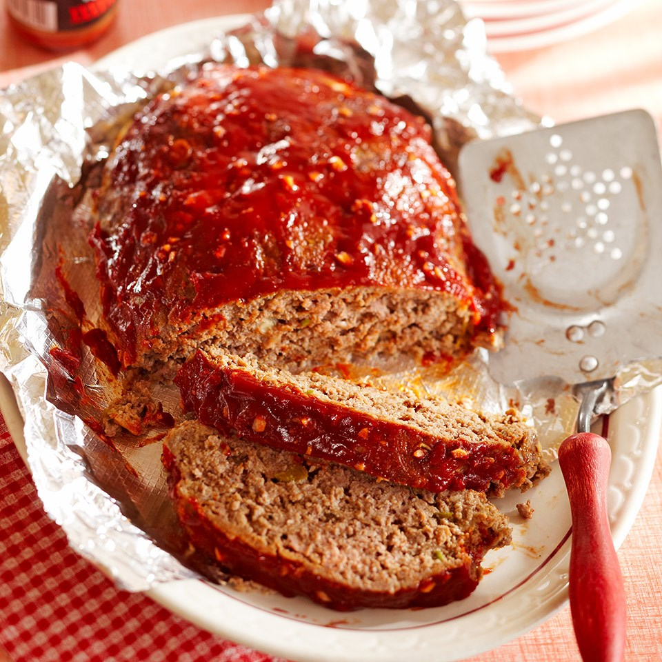

Classic Diner Meat Loaf

- 2/3 cup fat-free milk
- 1/2 cup refrigerated or frozen egg product, thawedred, orange and/or yellow bell peppers, trimmed, halved and seeded
- 2 cups soft whole wheat bread crumbs
- 2 green onions, thinly sliced
- 1 tablespoon Worcestershire sauce
- 1 teaspoon dried thyme or oregano, crushed
- 1/4 teaspoon salt
- 1/4 easpoon ground black pepper
- 1 1/2pounds 90% or higher lean ground beef
- 1/4 cup ketchup
- 1 tablespoon balsamic vinegar
- 1 clove garlic, minced